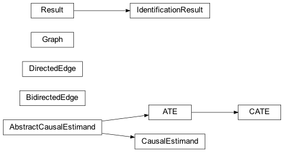

pqp.identification Package¶
Classes¶
|
Causal estimand for the average treatment effect |
Abstract base class for causal estimands |
|
|
A bidirected edge between two variables, represents confounding in the causal model |
|
Causal estimand for the conditional average treatment effect |
|
Subclass of AbstractCausalEstimand which carries its expression as a literal |
|
A directed edge between two variables, represents a causal relationship |
|
A causal graph |
|
Stores the result of identification |
Class Inheritance Diagram¶
